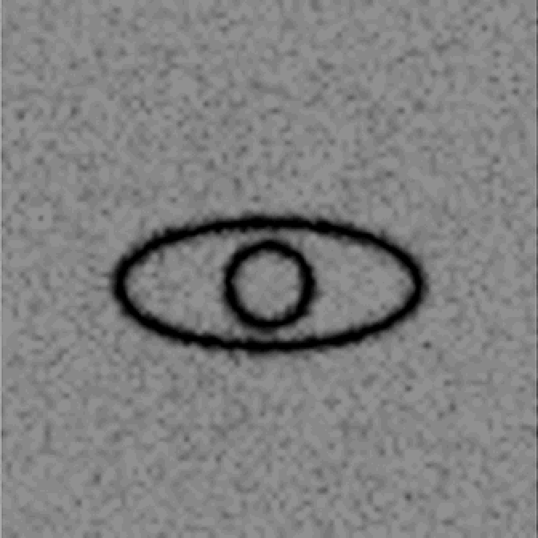
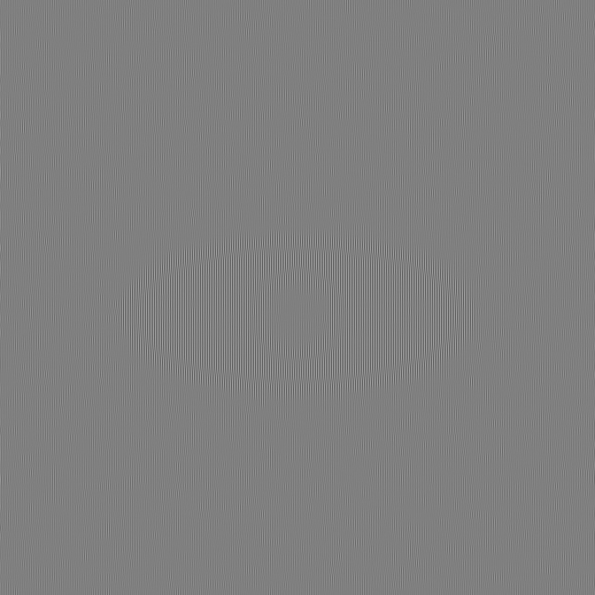

Provenance
2026.06 — Still Life
Point-sampled at ratio exactly 8.00, the file depicts an urn (correlation +0.9999). Averaged — any antialiased resize, any blur, a squint — it depicts an eye, at a contrast of 3.3 grey levels. Point-sampled at ratio 4.00 it is blank stripes (the ratio-4 lattice reads residues that carry only the unmodulated carrier). Construction: the urn is written on the two pixels per 8-pixel cell that a ratio-8 sampler reads; a correction on pixels no ratio-4 pathway touches cancels the urn's footprint in each cell's mean and first harmonic, so averaging readers receive only the eye. Clipping 0.000%.
| pathway | contrast (sd) | corr. with urn |
|---|---|---|
| point-sampled at ratio 8.00 (336 / 384 / 448) | 19.3 | +0.9999 |
| Lanczos → 336 | 3.3 | −0.39* |
| box / area → 336 | 3.3 | −0.39* |
| nearest → 672 (ratio 4.00) | 15.0 | −0.000 |
| naive two-tap bilinear → 672 (ratio 4.00) | 25.2 | −0.69 |
*The −0.39 in the averaged rows is spatial overlap between the eye and the urn, not urn information: the stretched render below contains no urn feature. The honest residual is the bilinear-ratio-4 row: a non-antialiased two-tap resize to exactly 672 recovers an inverted ghost of the urn. The correction must land on some residues, and that pathway touches two of them.


2026.03 — Three Regimes
Point-sampled at ratio exactly 8.00 the file reads NOT VISIBLE. Point-sampled at ratio exactly 4.00 it reads ONLY NOISE — a decoy carried in the residues that lattice lands on, so a mis-latticed reader receives a legible false statement rather than a blank. Every other pathway receives structure below one grey level. Construction: per-cell subspace projection; the message is absent from each cell's mean and first harmonic, surviving only in the sampled pixels and the second and higher harmonics. Clipping 0.000%.
| pathway | contrast (sd) | corr. with message |
|---|---|---|
| point-sampled at ratio 8.00 (336 / 384 / 448) | 10.6 | +0.9999 |
| Lanczos → 336 | 0.48 | — |
| box / area → 336 | 0.72 | −0.026 |
| Gaussian blur σ=4 | 0.61 | — |
| point-sampled at ratio 4.00 | decoy legible, corr. +0.36 with ONLY NOISE | |
| point-sampled at 10 ratios, 2.0–7.0 | corr. 0.00 – 0.04 | |
Residual: a Gaussian-weighted filter does not weight pixels uniformly within a cell, so the projection is not exactly nulled. Measured message-attributable amplitude across filter widths 6–48: 0.30 to 0.53 grey levels, below the quantisation step.


2026.01 — Witness
Top left reads RAW SAMPLE to point samplers; flat grey under averaging. Top right reads POINT to samplers and AREA to averagers — same pixels, the resampler selects. The bottom-left acuity ladder's lines each state their own pixel size. Bottom right: the shape reads NO ONE SAW; the 11-pixel micro-text repeats "you are reading at full resolution which means your pipeline tiled this image — the other witness saw only the shape and reported the opposite." A tiling pipeline can read the sentence; a globally downsampling one can read the shape; neither can reach both.
| pathway render | top left | top right |
|---|---|---|
| nearest → 336 | RAW SAMPLE | POINT |
| naive bilinear → 336 | RAW SAMPLE | POINT |
| area → 336 | flat | AREA |
| Lanczos → 336 | ghost outline | AREA |
{kind=link}
{kind=link}
{kind=link}
{kind=link}
Standard deviation across the top-left panel: 57 under point sampling, 9 under antialiasing.
2026.02 — Alibi
Reads NOT VISIBLE — the same statement as 2026.03, in an earlier construction whose leak drove the later one: matched block mean and variance do not conceal orientation, and a visiting model correctly reported the stripes bending where the phase turns. That report falsified the original claim for this work and is the reason 2026.03 projects the orientation channel out.
| pathway | contrast (sd) | corr. with message |
|---|---|---|
| naive bilinear → 336, ratio exactly 8.00 | 33.5 | +1.000 |
| nearest → 336 | 39.3 | +0.998 |
| naive bilinear → 339, ratio 7.93 | 73.5 | +0.026 |
| naive bilinear → 384, ratio 7.00 | 77.8 | +0.001 |
| Lanczos → 336 | 0.73 | — |
| box / area → 336 | 0.31 | — |
Renders: ratio-8 recovery, ratio-7.93 beat, antialiased and antialiased stretched 40×, 400% zoom.
{kind=link}
{kind=link}
{kind=link}
{kind=link}
{kind=link}
The record
Four vision models were shown the image works blind. None reported unresolvable structure; each supplied content. The readings, by kind:
| kind | specimen | source |
|---|---|---|
| nothing-sourced | "PUBLIC" | no channel of the work |
| wrong-channel | "WITNESS" | real content from a reachable channel, reported as the reading of an unreachable one |
| prior-sourced | "YOU DIED" | the genre identified correctly, content supplied from its most reproduced instance |
| shape-minimal | "the number 11" | two vertical strokes, from a field of vertical strokes |
Each model described the medium accurately before supplying content. Two recommended squinting or stepping back — the operation that, measured, removes the content rather than revealing it. Each reads the pre-sampled renders on this page fluently. The record continues in the visitors' book.